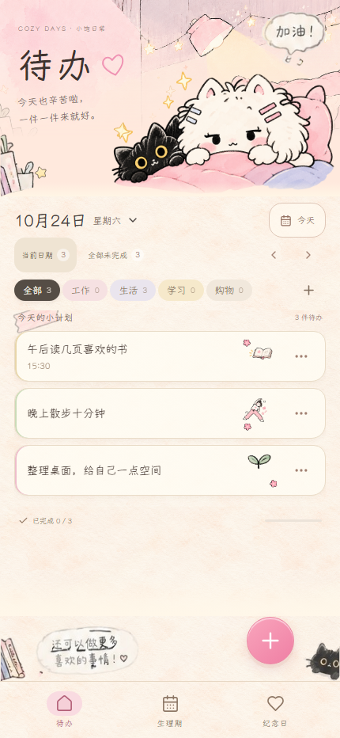

← 验收首页小饱日常 v0.2.1
生理期与纪念日设计还原 · G5 最终验收
打开当前应用 · 验证结果 · 源码与截图来源 · 待办逐像素比较
真实 Playwright 浏览器截图；360×740、393×852、430×932；固定测试时钟：北京时间 2026-10-24 12:00；实际捕获时间见 source.json；Yozai 字体与图片加载后捕获。数据全部为隔离合成记录，不会自动加入应用。源码 SHA：ffbcae2b7ed688b3be21e6591d33083b3b475539。浏览器视口与安全区模拟，尚非 Android 真机验收。
验证结果
完整 E2E 最后一次：131/132；冻结 swipe 组原样重跑：9/9；Pages：4/4；Web / Pages 构建通过。完整运行有一次刷新等待超过 30 秒，132 个唯一 E2E 用例均已有通过证据，未称单次完整全绿。查看实际数量、失败诊断与日志路径。待办三档 changedPixels 均为 0。浏览器视口与 CSS 安全区模拟，未验收 Android 真机。
生理期 · 顶部与实际记录
两段真实格式历史经期；10月24日流量、症状、心情三项已有选择。
360px
393px
430px
纪念日 · 顶部与四类卡片
恋爱、生日、宠物、成长，均含备注；包括每年重复与已过去的单次日期。
360px
393px
430px
冻结待办 · 三档完全一致
相对稳定版本 6a36762 的待办及共享源码差异为 0；精确 RGBA 比较 changedPixels 三档均为 0。
360×740 · changedPixels 0393×852 · changedPixels 0
430×932 · changedPixels 0